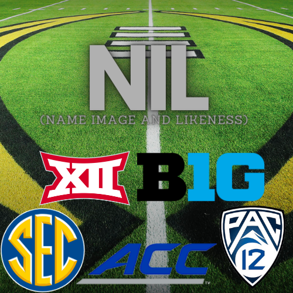
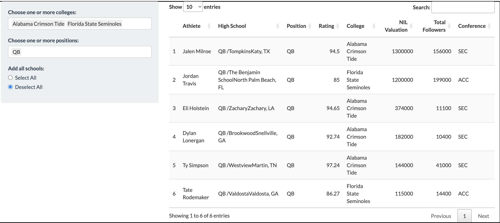
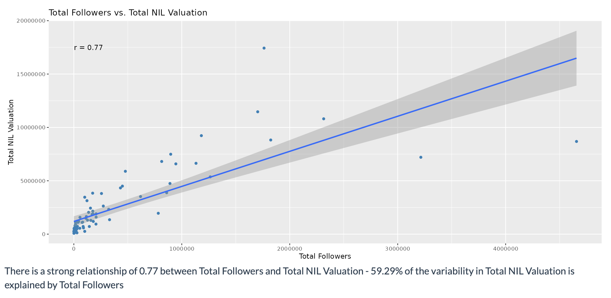
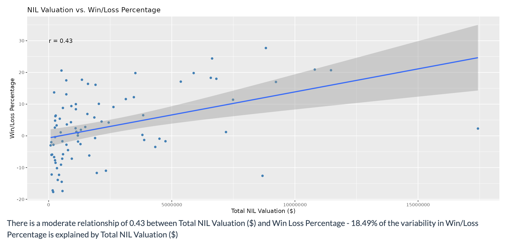
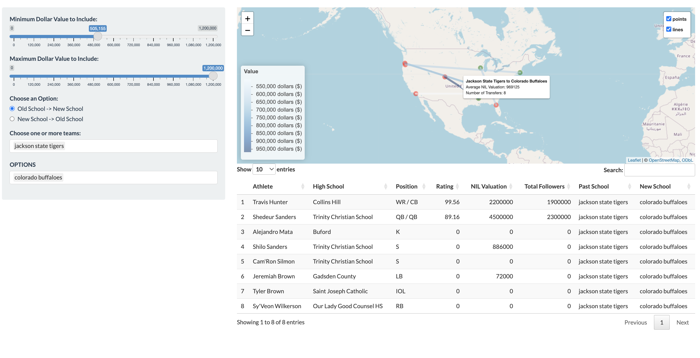
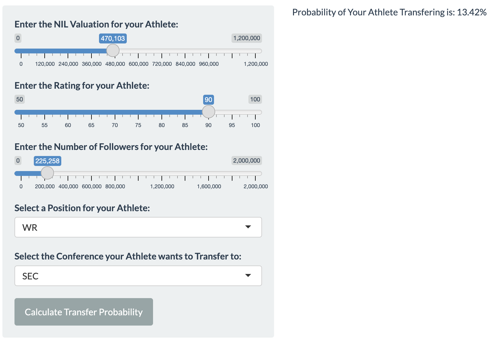

Statistics Behind N.I.L.
Intro
What is N.I.L.?
The ability to profit from one’s own Name, Image, and Likeness (NIL), became legal for college athletes on July 1, 2021. The rule change allows college athletes to monetize their own status and influence.
What is Our Objective?
The rule change allowing players to monetize their NIL has greatly influenced college sports, namely football. College Football has long been a money-making machine for institutions across America. However, as the schools, athletics departments, and coaches reaped the benefits of their football teams’ successes, it was illegal for players to make profits. This all changed in July of 2021 with the legalization of NIL. The world of NIL has since led to massive controversy. Arguably the largest issue that has stemmed is the concern that people are no longer loyal to their team. The transfer portal represents an opportunity for teams to effectively bid for players. This effective bidding war includes money poured into it from school sponsors and fans. The focus in college football has seemingly shifted from an effort to develop one’s own players to an attempt to “buy” players from rival teams. But how important is NIL to team success? To what degree does NIL influence player transfer decisions?
As a group, we question what common factors may induce players that transfer, and whether the post-NIL world has led to more success for those teams who spend more NIL money (measured by winning percentage before and after NIL legalization).
Where Did We Collect Our Data?
Visuals
Table: Athletes

This table display allows the user to be introduced to the data in an easily-digestible way. The user can sort the table by team and/or position while viewing as little or as many players as they would like.
Scatterplot: Followers vs. Valuation

NIL Valuation is based on a player’s marketability. Whether it be because the player is a top national talent or has a likeable personality to go along with their skillset, they need to be able to garner attention. In today’s age, a player’s social media following is a tell-tale sign of how well-liked/well-known they are.
This scatterplot looks at team NIL valuation (the amount of money the school has spent on NIL deals for their players) versus the total followers among the players on NIL deals.
Scatterplot: Valuation vs. Win/Loss

NIL valuation is an off-the-field measure that is taken with the ultimate goal of bringing the best possible players on to one’s team. However, to understand if that measure has actually worked, we can look at the change in Win/Loss percentage for teams, before and after NIL legislation.
Map: Follow The Money

This network map shows what schools transfers have left from and where they have gone to. Also, the user can change the maximum and minimum average NIL values that moved from one given team to another to be more specific in their searches and see various trends in the flow of money.
Map: Will My Athlete Transfer?

Lastly, we have a “Will my Athlete Transfer?” calculator. It uses various predictors, allows the user to change them, and produces a percentage value for the probability an athlete would transfer with those attributes. The probability calculation is based on data of past transfers with similar attributes.
Interactive Display
Conclusions
With NIL being such a new topic, our group didn’t possess any pre-existing knowledge about the trends we might encounter. Consequently, formulating well-informed hypotheses proved challenging due to the limited availability of information on the subject.
Looking at the results, it is evident that N.I.L. has exerted a more significant influence on player transfers and destination choices than the on-field impact for teams. In each of the scatterplot visuals, the most glaring observation is the discrepancy in NIL spending between various D1 football teams. Schools such as Texas, Colorado, and Alabama have invested significantly most into their NIL funds, as compared to the majority of other teams. Therefore, both scatterplots have these extreme outliers that impact the fit of a best-fit line. Therefore, we decided to include correlation values and the option to remove certain teams (specifically, these outliers) from the model. The removal of these outliers improves both the fit of the regression line, as well as the correlation value. The scatterplot of Followers vs NIL Valuation has an extremely strong positive correlation, with an r value of 0.77. The scatterplot of NIL Valuation vs Win/Loss Percentage shows a moderate, positive correlation, with an r value of only 0.42. Thus, confirming that the type of player that would transfer (one that has more followers) is more closely associated with an increased NIL valuation. The weaker correlation between NIL Valuation and Win/Loss Percentage conveys that increased NIL spending is not impacting on-field performance, yet. This trend is understandable as two years (timespan since NIL legislation) is generally not enough time to see significant growth or decline in the performance an entire team. Re-running this model in a few years might lead to a more significant trend.
We are interested to see when we run our app in a few years, will schools like Colorado still be a top spender? Will new universities not previously mentioned realize their team’s potential if they invest in talent? Also, how much more significant will our predictors be in a few years for our logistic regression transfer predictor when we collect more data?
References
(December 2023), “College Football NIL Rankings”, On3NIL, available at https://www.on3.com/nil/rankings/player/college/football/.
“College Football Team Win Trends”, TeamRankings, available at https://www.teamrankings.com/ncf/trends/win_trends/?range=yearly_2023&group=0.
“2023 College Football Transfer Portal Top Players”, On3NIL, available at https://www.on3.com/transfer-portal/industry/football/2023/.
(December 2023), “List of NCAA Division I FBS football programs”, Wikipedia, available at https://en.wikipedia.org/wiki/List_of_NCAA_Division_I_FBS_football_programs.